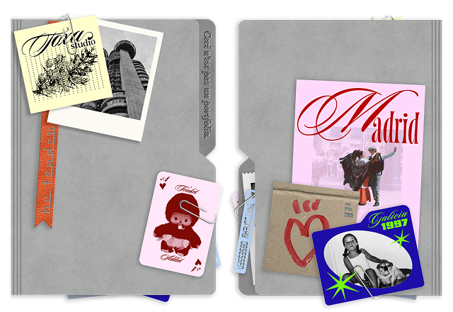
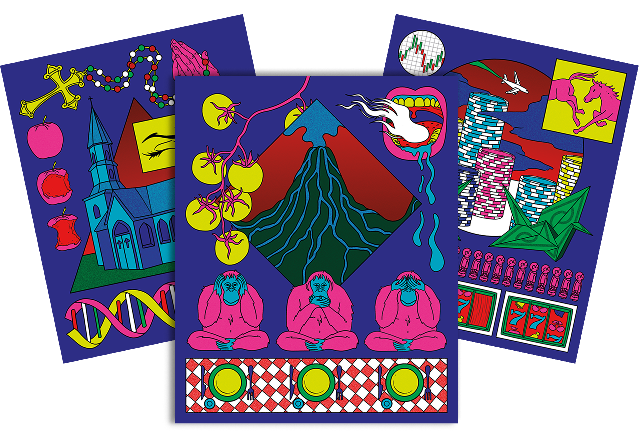
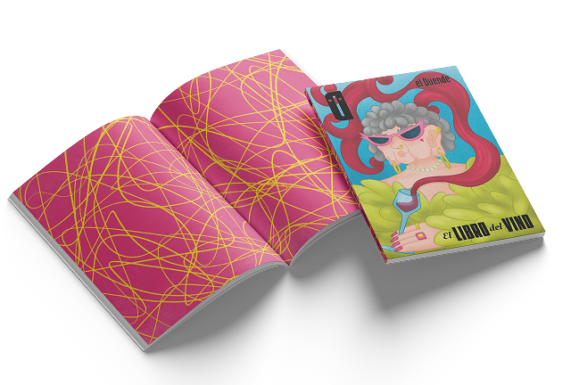
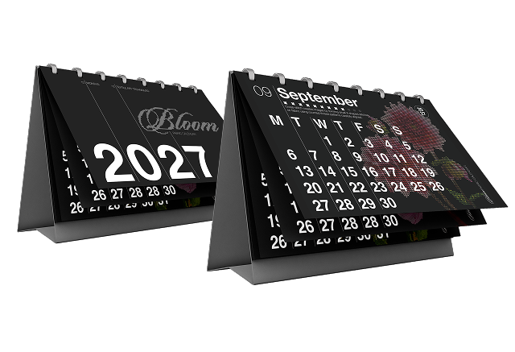

PROJECTS
A CURATED SELECTION OF RECENT WORK.
PACKAGING
2025
EMBULLATS WINE
Packaging design for Embullats, a young Mediterranean
wine brand. The visual system translates ideas of connection and sustainability through bold typography, a reduced color palette, and the integration of recycled fishing nets as bottle holders. A project focused on materiality, concept clarity,and contemporary brand expression.
GRAPHIC EXPLORATION
2025

CECI N'EST PAS UN PORTFOLIO
“Ceci n'est pas un portfolio” is born from a question: can a collection of images truly summarize who I am as a designer? Through a composition that simulates an open folder, I gather tastes, influences, and visual obsessions like loose fragments. It is not a definition, but an honest gesture of exploration.
CONCEPTUAL ILLUSTRATION
2026

JOTDOWN MAGAZINE
These three illustrations created for Jotdown stem from a clear intention: to translate complex ideas into images. Each piece explores a concept through a visual lens, seeking a balance between narrative, metaphor, and composition. Rather than merely accompanying, the illustrations propose their own reading, built through contrast, synthesis, and graphic tension.
UX / UI
2025
TACORA APP
UI/UX design for Tacora, a mobile app created to ease moments of waiting and reconnect users with the present. The project focuses on intuitive navigation, calm visual language, and thoughtful microinteractions to encourage mindful engagement. A digital experience designed to transform idle time into intentional pause.
ILLUSTRATION
2025

EL DUENDE MAGAZINE
Cover design for El Duende magazine as a tribute to wine culture. The proposal combines bold typography and expressive composition to convey character, tradition, and contemporary sensibility. A visual approach that translates the symbolic richness of wine into a striking, vibrant, and atmospheric editorial statement.
BLOOM FABRIC CALENDAR
2026

BLOOM FABRIC CALENDAR
Editorial design for Bloom Fabric Calendar, a project that highlights textile arts through graphic design. The calendar system explores composition, typography, and material-inspired color palettes to bridge craftsmanship and contemporary visual language. A structured yet expressive approach to celebrating tactile culture in print.